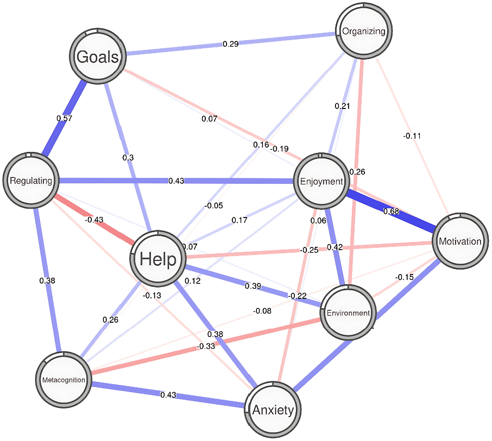
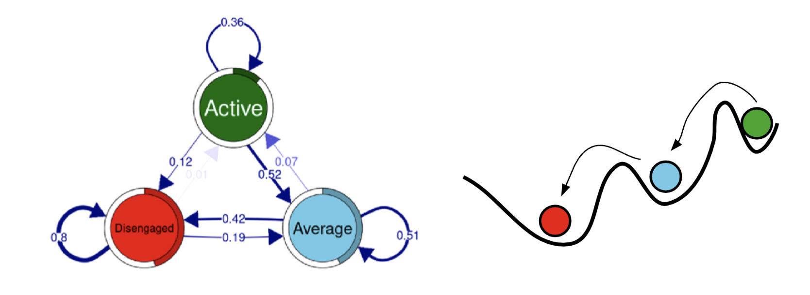
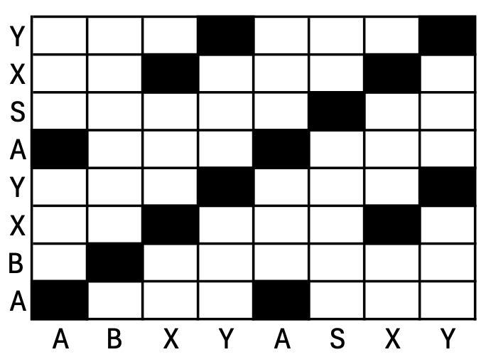

12 Complex Dynamic Systems in Education: Beyond the Static, the Linear and the Causal Reductionism
1 Introduction
Learning —like most psychological phenomena— is far from being simple or trivial. It involves multiple cognitive processes, contexts and dimensions with complex and dynamic interplay between them [1–3]. Therefore, most learning theories and frameworks describe learning as a multifaceted process that evolves over time. For example, most theorists depict self-regulated learning as having several phases or processes [4] that influence each other resulting in the emergence of certain behaviors, e.g., learning strategies. Similarly, engagement is commonly conceptualized as a multidimensional process that unfolds in time with a significant interplay between the dimensions across contexts, tasks and cultures [3, 5]. These complexity features apply to most learning theories, frameworks, and constructs and also extends to interpersonal processes, groups, classrooms, and organizations [6]. All of the aforementioned examples, and many others, exhibit features typical of complex systems. Traditional methods often fail to adequately capture their complexity and dynamics, and therefore, complex system methods are required to capture their unique features [3, 7].
But, before moving on, we must articulate what we mean by a complex system. The word complexity signifies multiple components that interact with each other in intricate ways [8]. Thus, a complex system is a collection of components that interact together in unique ways that lead to the emergent behavior of the system as a whole and cannot be understood by nor reduced to its individual components. The term dynamic indicates that the system changes and evolves over time exhibiting different states and conditions [9, 10].
Researchers vary in their definitions of complex dynamic systems and in the level of detail by which they describe these systems. However, most researchers can agree on some basic requirements for identifying a system as complex: the presence of intricate properties, chaotic unpredictable behavior or outcomes, nonlinear dynamics, and interactions between the system components [11, 12]. Furthermore, these properties exist in different mixtures exhibiting different dynamics and interactions and due to this variability, complex systems and their associated behaviors/properties are not perfectly replicable [9, 10].
2 Why complex systems in education?
As we have mentioned before, humans, their behavior, and their social structures (e.g., groups, institutions, societies) manifest complex and dynamic behavior, making conceptualizing them as complex dynamic systems an apt epistemological endeavor [1]. Viewing human phenomena as complex dynamic systems allows us to capture their complex organization, dynamics, and behavior [13]. It stands to reason that while traditional statistics and inference methods may be useful in capturing some characteristics of complex systems or offer a summary of a system’s state at a single time, such methods are incompatible and would fail in fully capturing the complexity of these systems [11].
Traditional statistics were designed to capture what is commonly known as a box-and-arrow structure, where A and B leads to C; what is known as component-dominant structure. In component-dominant structures, the components themselves in their accumulation, are assumed to define the behavior of the system [13]. Therefore, the focus in complex systems shifts from analyzing components in isolation to the whole system and to understanding the interactions between them [1, 3]. The effects of interactions—rather than the individual components themselves—become more significant in determining the system’s behavior. These interactions can result in emergent behavior that cannot be fully explained by simply summing the effects of individual components [1, 3].
Let us take an example. In a box-and-arrow system, a researcher may study variables that influence students’ achievement with data that includes the constructs of student engagement, teacher competence, and home support. The researcher uses regression analysis and computes a coefficient for the relations of each of these variables with achievement to estimate their distinct contributions to predicting achievement [1, 5]. In a regression analysis, the assumption is that each of the three variables relates to achievement in a way that, at least in part, is independent from the other variables. By the statistical assumptions governing the regression analysis, the variables are required to have no significant relationship with each other (often referred to as non-collinearity). Clearly, such assumptions constitute an oversimplification of the interrelations of these variables: they influence each other and interact with each other in non-trivial ways. A supportive home would boost engagement, as would a competent teacher, and, in turn, engagement could facilitate familial support of the student [3, 14]. As such, assuming that variables are independent and unrelated does not reflect real-life social-psychological processes that underlie learning and achievement. Conceptualizing learning and achievement as a complex dynamic system, in which the three variables interdepend and mutually impact each other, would better correspond to reality [3, 13]. A complex dynamic systems approach would allow conceptualizing, investigating, and describing the interactions between these variables, and the mutual influence they exert on each other in a way that reflects the multifaceted nature of learning and achievement. That, however, requires appropriate methods that are able to capture the dynamics, processes, interactions, and intricacies among these variables, and the way they give rise to the global behavior of the system. Such research would lead to a theory of the emergence patterns of the learning and achievement system, how the system’s components reflect a process of self-organization, and how the system’s global behavior constrains the state of the system’s components and their interactions [2, 3, 10, 15, 16].
Thus, in contrast to box-and-arrow or component-dominant systems, complex dynamic systems are interaction-dominant - the interactions and the interdependencies between the components define system behavior. Hence, system behavior cannot be reduced to any of the components or their distinct interactions. As the system’s components interact, new behavior, and behavior patterns emerge. Notably, the relationship between the system’s behavior and the states of its components is not proportional, which manifests in nonlinear system behavior. Rather than an additive process, a complex system’s components and their interactions give rise to behavior that is greater than the sum of its parts (e.g., planning + metacognition \(\neq\) self-regulation). Complex systems are also not strictly predictable [17, 18].
Adopting a CDS lens in education presents an opportunity to advance our existing theories and provide a deeper understanding of change, stability, and resilience in educational contexts. An opportunity to understand the dynamics and temporal aspects of how a learning process progresses, regresses or interacts with the context and environment. These dynamical aspects, while prevalent in our theories and practice, have remained hardly straightforward to capture with existing methods or interpret with existing theoretical frameworks. Recently, serious work has been done to renew theories within CDS see for instance [5].
Using a CDS lens has resulted in significant breakthroughs in other fields e.g., Nobel prize in physics [19] and holds the promise for novel and meaningful insights to unravel the structure and temporal dynamics of learning. These opportunities not only promise a richer understanding but also offer practical implications for designing interventions that are adaptive, resilient, and responsive to the nuances of educational systems. To further explain the complex systems and their dynamics we will discuss the main characteristics and concepts of complex systems in the remainder of this section.
2.1 Nonlinearity
Nonlinearity is a defining feature of complex systems, describing relationships between system components as not proportional or additive and highly sensitive to initial conditions [20]. Within a nonlinear system, the output (or behavior) of the system is not directly proportional to the input, where small changes can lead to disproportionately large outcomes, and vice versa, also described as a “butterfly effect” [21]. This concept directly contrasts with linear systems in which the system’s output is easily predicted by the inputs, such as represented by the equation y = mx + b and similar variations. In complex systems, nonlinear relationships can manifest in ways that defy conventional intuition (e.g., [22]) where a small environmental disturbance, such as the interruption of a classmate, can trigger a cascade of effects that can dramatically and irrevocably alter learning processes, e.g., [22] disruption of cognitive engagement. A typical example of non-linearity in educational psychology is the Yerkes-Dodson law, which describes the relationship between arousal and performance [23]. The Yerkes-Dodson Law states that performance improves as physiological or mental arousal increases, but only to an optimal level. Beyond this point, excessive arousal leads to a decline in performance (see Figure 12.1).

Similarly within learning processes, initial conditions (e.g., the age of a pedagogical agent) can significantly and disproportionately affect students’ learning outcomes. Nonlinearity in complex systems highlights that systems are not merely the sum of their parts; rather, the interactions between components of a system and the elicitation of these interactions by initial condition can create emergent properties, leading to unforeseeable outcomes by considering and examining individual components alone.
2.2 Emergence and Self-organization
In complex systems, emergence refers to how new properties, patterns, and behaviors arise from the interactions between a system’s individual components, although these behaviors are not present within the components themselves [24, 25]. In other words, the behavior of the whole system cannot be attributed to a single component and the contribution of any component cannot be isolated, nor can it be added to any other putative distinct contributions. It is the interaction that elicits these behaviors. For example, in psychological phenomena such as self-regulated learning, the process of self-regulation cannot occur by just enacting individual components, or strategies. Instead, it is the interaction between these strategies, such as engaging in information processing while evaluating content as (ir)relevant, from which this process emerges [26]. The emergence concept illustrates how the whole system becomes more than just the sum of its parts, exhibiting capabilities that transcend the faculties of individual components.
Self-organization, closely related to the concept of emergence, is the process by which order spontaneously arises from disorder without the oversight of a central controller [27, 28]. Self-organization can be explained by the presence of simple local rules that lead to global-scale patterns of behaviors. Continuing our example in applying these concepts to self-regulated learning from above, students’ self-regulation can follow a set of simple rules resulting in self-organization. For example, a simple rule could be that after defining a task, a student should engage in planning procedures. This rule can trigger a set of several cognitive and metacognitive processes (e.g., prior knowledge activation, planning, goal-setting) that occurs without the dictation of a central controller, representing self-organization in learning processes and other educational phenomena. Within psychological phenomena, this can be seen in group dynamics in which social norms, cultures, or identities are formed within groups and result in synchronized behavior, such as that seen within amusement parks or vehicular traffic. The self-organization of these systems is driven by feedback mechanisms that constrain and reinforce patterns from which behavior can demonstrate stability and adaptability (see Figure 12.2).

2.3 Feedback Loops
A fundamental concept within complex systems, feedback loops occur when the output of a system feeds back into itself to serve as inputs. These feedback loops serve as the way in which a system amplifies its behavior (positive feedback loop) or stabilizes changes within the system (negative feedback loop), shaping the system’s adaptability to environmental changes [29]. Positive feedback loops accelerate change wherein the system moves away from its initial state and experiences exponential growth. We can think of positive feedback loops in terms of the engagement of cognitive and metacognitive strategies during learning. As students become increasingly engaged with learning materials, develop conceptual understanding, and mature in their abilities to adequately deploy learning processes, the student’s cognition and behavior can move away from its initial state, destabilizing to further mature and develop in their application of learning processes.
Negative feedback loops moderate the change within the system to stabilize behaviors, leading to systems that demonstrate equilibrium. For example, stabilization of cognitive processes, such as in the repetition of learning strategies over a short period of time, can result in the equilibrium of a system in which the learning establishes a new “initial” state. In complex systems, the presence of both positive and negative feedback loops is essential for the balance and functionality of a system wherein excessive change can lead to unsustainable growth and subsequent collapse but a substantive lack of change indicates stagnation.
With psychological phenomena, such as emotion regulation, the balance of activating and deactivating states are essential to the stability and health of a system. In this context, an example of a positive feedback loop is the interaction between anxiety and procrastination (Figure 12.3- left): anxiety about a task leads to procrastination, which in turn increases anxiety as deadlines approach, creating a self-reinforcing cycle that can spiral into overwhelming anxiety (instability). On the other hand, a negative feedback loop can involve anxiety and self-regulated time-management strategies (Figure 12.3 - right), where anxiety triggers the use of time-management techniques, such as breaking tasks into smaller steps or scheduling work sessions. These strategies reduce anxiety by promoting a sense of control and progress, gradually stabilizing emotional fluctuations and converging toward a balanced state of productivity.

2.4 Adaptation and Evolution
Feedback loops serve as the mechanisms by which a complex system can adapt and evolve. Through these mechanisms, a system can respond to both internal and external conditions wherein the components of a system can make decisions based on local information, self-organize into new configurations that respond to added conditions, and maintain functionality within dynamic environments [31, 32]. However, there is a balance that must be struck in the adaptability of a system in which a system that is too rigid or too flexible can result in counterintuitive behaviors that result in the instability of a system.
Rigidity, broadly, refers to the inability for system behaviors to adapt to the external pressures and influences of the surrounding environment. In being too flexible, however, system behaviors do not adhere to the rules set to determine how the individual components react to environmental changes and in response to other system changes. For example, if a learner’s self-regulation system is too rigid, this may be characterized by the increased repetition of minimal learning strategies such that a learner may only apply summarizing and note-taking to the learning materials. This presents a potential issue in that if the learning material no longer supports these two strategies (such as seen within non-traditional lectures and materials), the learner may not be able to apply more novel learning strategies. Conversely, if the learner’s behaviors are too flexible and do not adhere to the internal rules of the system, the learner does not demonstrate structure which is imperative for learning.
The adaptivity of a system can result in the evolution of the same system where, because of the changes the system was required to undergo as a reaction to internal or environmental changes, the emergent properties and patterns of system dynamics no longer replicate those present within the original system [33]. This is modeled in systems that display increasingly more sophisticated and complex behaviors as time progresses. For example, evolution within educational psychological systems is determined by the emergence of new behaviors or abilities within students. In reference to psychological phenomena, educational psychologists have coined the term learning wherein the understanding of an individual changes as a result of new information present within the environment.
2.5 Hierarchies, Scales, and Network Structures
Complex systems are characterized by their organization and interactions across organizational levels. This organization allows us to understand system structures and the influence each structure and connection has on each other for informing adaptive and evolutionary behaviors. Hierarchical, or multi-level structures, refer to a system’s organization of its components in layers where each level consists of components that can be considered sub-components of a higher-level system [34]. Each of these levels can function on different spatial and temporal scales wherein the behavior of an individual component can affect a larger system. When examining complex systems, it is essential for scales to be considered as observing only one level may not allow for the patterns of the full system to be observed. For example, self-regulated learning consists of several macro-processes which each contain several micro-processes. Examining only a singular macro-process (e.g., planning) —while providing valuable insights about planning, a specific aspect of the self-regulatory process– narrows the scope in which the self-regulatory behavior cannot be fully examined. Networks are the frameworks that connect each component of a system which shapes how information is conveyed across the different components, whether the components are different levels or scales [32]. Within a networked system, components are connected through relationships that dictate how components interact with each other. These relationships determine the speed at which information spreads, the resilience of a system to failures, the uniformity of system components in relation to each other, and the elicitation of emergent behaviors [35]. Because of these hierarchies, scales, and networks, it is difficult to determine the underlying causes of behaviors and predict future system behaviors but is vital for the adaptability and evolution of the complex system (Figure 12.4).

2.6 Dynamics and Sensitivity to Initial Conditions
Complex systems exhibit dynamic behaviors that arise from the interactions between system components. System dynamics refer to the changes exhibited by the system over time due to the evolution of component interactions and the influence of external conditions from the environment. The dynamics of a system can demonstrate cycles of repeated behaviors, chaotic behaviors that appear random, or emergent in which unforeseen patterns suddenly or gradually arise from local interactions [20]. However, these dynamics are greatly sensitive to initial conditions in which small variations in the starting point of a process can have a multiplicative effect on system behaviors later on. This ties into the aforementioned “butterfly effect” concept mentioned earlier in this section. In all, the sensitivity to initial conditions makes it nearly impossible to employ predictive modeling when encountering complex systems where short-term behavior may be relatively predictable in contrast to long-term behaviors due to the amplification over a temporal scaling. Attractor states serve as the stable configuration of relationships and behaviors that a complex system tends to evolve toward [36]. This can be thought of as the ‘destination’ of the system in which a mathematical model aims to represent all possible states that a complex system occupies, including the intermediary states, on its course towards a convergence point (see Figure 12.5). An example is found in the study by Gao et al. [37] exploring students’ motivation, where the authors found that several initial conditions interact closely with academic affordances, steering the system toward attractor states primarily influenced by career planning.

3 Analytical approaches
Scientific paradigms shape the nature of research questions and the methods used to answer them [38]. The complex systems approach uses certain methods of investigation and has developed its own toolbox of analysis and computer modeling.
3.1 Network analysis: Capturing the interactions and dynamics
Network analysis is a quantitative method to identify the structure and interactions between components of a complex system [39, 40]. Networks are represented as nodes (i.e., vertices) and edges (i.e., links) where nodes typically represent the component of a complex system and the edges represent the relationships between these components. These nodes and edges serve as the fundamental building blocks of networks, identifying intersecting relationships between system components. For example, if we take self-regulated learning (see Figure 12.6) as a complex system, a specific strategy (such as goals setting) will be represented as a node where edges will be visible to show how strategies connect with each other, e.g., regulation, or help-seeking [41]. This analytical approach is extremely valuable for capturing and examining interdependent relationships wherein it is essential to dissect the degree to which nodes are related to each other.

From this analytic method, researchers can capture the number of connections each node has which quantifies the degree of influence a particular node has on network dynamics (i.e., strength or expected influence), if a node acts as a critical connector for other parts of a system or other networks which reveals its role in transferring information within a system (i.e., betweenness centrality), the tendency of a system to form tight sub-groups which reveals system hierarchies and interconnectedness (i.e., clustering), and the distance between nodes which reveals the efficiency of information spread across a network (i.e., path length; [42]). These network analytics can allow researchers to visualize system connectedness, patterns, and outliers, analyze how these relationships change over time, and identify the complexity of the system structure (e.g., nested, hierarchical, multilayered) [43, 44].
There are several examples in the literature of the use of psychological networks to model psychological or education processes. SRL, as exemplified before, has been one of the phenomena most commonly modeled through complexity methods. For instance, López-Pernas et al. [45] used partial correlation networks [44] to model the relationship between students’ SRL components. The authors found that the SRL dimensions with the most influence in the SRL process differ from the beginning (when metacognition is more influential) to the end of the course (motivation), and therefore might be more amenable to intervention. Saqr & López-Pernas [41] used different temporal and contemporaneous networks to study the differences between group-based (depicted in Figure 12.6) and individual SRL dynamics. The authors concluded that the average SRL process is not representative of the individual SRL processes of each student, advocating for the study of idiographic analysis to gather personalized insights. Using a similar approach, Saqr [46] studied the interplay of engagement dimensions using log data from a learning management system and found marked differences between group-level and within-person variance. These highlight that complex systems behave differently for different individuals, depending on the initial conditions, the interdependence between the system’s components, and the influence of external variables.
Through a transition network analysis approach [47], López-Pernas and Saqr [13] studied the longitudinal dynamics of online engagement using sequence analysis and transition networks (Figure 12.7 - left) and found that engagement patterns remain relatively stable over time, aligning with the typical behaviors observed in complex systems (i.e., attractor states, Figure 12.7 - right). Significant changes in these patterns are rare, and when they do occur, they are generally brief, with students often reverting to their original engagement levels. This suggests that a student’s initial engagement state heavily influences their long-term trajectory, effectively determining their likely outcomes.

Lastly, it is worth mentioning that, although SRL and engagement can be studied as complex systems of their own, they can be also modeled as part of a macro complex system where they interact with one another and other components (e.g., motivation), as proposed by [44] (Figure 12.8).

3.2 Recurrence Quantification Analysis
Recurrence Quantification Analysis (RQA) is a statistical technique that reveals the nonlinearity and dynamic properties of time series data [48, 49]. This method detects and quantifies how systems shift between repetitive and novel sequences of behaviors across a temporal space. Three types of RQA methods exist: auto-RQA (aRQA), cross-RQA (cRQA), and multidimensional-RQA (mdRQA). aRQA examines the dynamics within a singular time series, cRQA identifies shared dynamics of two time series, and mdRQA identifies the repeating patterns across more than two time series [50]. These analyses can be completed with either categorical or continuous time series data which are mapped against each other on a matrix where Time Series 1 is mapped on the x-axis and Time Series 2 is mapped on the y-axis. On the matrix, the intersection of time series values are highlighted black if the values are considered the same, pre-determined using radial metrics (this is explained in the tutorial down below).
Taking categorical aRQA as an example, Time Series 1 [A, B, X, Y, A, S,X, Y] will be the same dataset as Time Series 2 [A, B, X, Y, A, S, X, Y]. Every time on the matrix time points match in value, such as that with time points t1 and t5 as well as t3 and t7, the intersection on the matrix is shaded black (see Figure 12.9). The diagonal line represents the line of identity (LOI) where the time series will always be recurrent with itself at Lag 0. Lags are defined by the distance between time points. For example, Lag 1 represents time points that are removed by one time space (e.g., Time 1 and Time 2, Time 2 and Time 3); Lag 2 represents time points removed by two time spaces (e.g., Time 1 and Time 3). By incorporating lags into subsequent analyses, RQA considers the temporal relationships between events such that patterns in data can emerge across large time differences.

RQA outputs several metrics, including recurrence rate (proportion of repetition), percent determinism (proportion of patterns on diagonals), average diagonal line length (average length of diagonal line structures), laminarity (proportion of repetitions on vertical line structures), and trapping time (average length of vertical lines). This is not an exhaustive list, but it represents the vast amount of information that can be extracted through this analysis that can explain the degree to which a system displays dynamism, how events that occur within the environment impact the dynamics of the system, and the degree to which a system demonstrates adaptivity. For example, a study by Dever et al. [26] applied this analytical methodology to self-regulated learning strategies during game-based learning. In identifying significant differences in the metrics output by aRQA analyses according to learning outcomes and agency experienced by students in the game, Dever et al. [26] established how students demonstrated functionality in their self-regulation during learning and were able to identify instances in which students demonstrated dysfunctional self-regulation. This provides interesting insights into how students should be supported and scaffolded within their self-regulated learning behaviors. For example, can we identify when a student demonstrates dysfunctional behaviors and how can we design interventions which help the student to correct this dysfunction to demonstrate functional self-regulation?
3.3 Simulation
Nowadays, computers make it possible to implement complex systems of equations of change. But for those who shy away from mathematical formalization, there are user-friendly computer programs that make it very easy to simulate the complexity of interactions at the origin of self-organization processes and attractor dynamics [17, 51, 52]. Among the most popular computer simulation tools are dynamic networks, agent-based models, and cellular automata. As explained earlier in this chapter, a dynamic network models a complex system as a network of connected nodes (the system’s components). This type of computational tool has been used to model and simulate the dynamics of several phenomena of interest to the educational field, including intelligence development [53], language development [54], parent-child interactions [55], and goal-directed motivation [56]. One of the most user-friendly open-source software packages for creating dynamic network models is Insight Maker1. Agent-based models simulate the behavior of virtual agents that represent the components of a system. These agents interact with each other and with their virtual environment based on iteratively applied evolution rules. Agent-based models have thus made it possible to model the dynamics of phenomena important to the educational context, such as motivation [57, 58], language development [59], and parent-child interactions [60]. One of the most widely used open-source, user-friendly programming platforms for agent-based modeling is NetLogo2. Finally, cellular automata are simplified forms of agent-based models, where agents are the cells of a two-dimensional lattice or a line. The state of each cell at time t+1 depends, through the application of an evolution rule, on the state of the cells in its neighborhood at time t. The same rule is then applied to the new generation of cells at t+1 to shape generation t+2, and so forth. One of the most insightful applications of cellular automata to psychological development processes concerns the self-organizing dynamics of the self-concept into differentiated structures [51], that is, into distinct clusters that may virtually represent different dimensions of the self, such as the academic self, the athletic self, the relational self, etc. Among the open-source platforms for user-friendly implementation of cellular automata we might mention Golly3.
Unlike the component-dominant mainstream approach, which aims to identify causal factors, the complex dynamic systems paradigm focuses on the identification of interaction-dominant processes. This is what the research methods we have just briefly reviewed contribute to, by aiming to experimentally test the volatility and stability of systems’ behavior, to identify statistical signatures of complexity and non-linearity in the time series of these systems’ states, to formally and/or computationally model the self-organization processes at work within them, and, for the sake of validating the models built, to retrieve the same statistical signatures in the time series generated by their computer simulation. Once validated, these dynamic models are invaluable tools for testing the effects of interventions, such as pedagogical ones, on the dynamics of important educational variables.
4 Data collection
4.1 Capturing a system’s state through rich description: interviews and written reflections
Understanding complex phenomena, such as individuals’ learning, motivation, identities, and actions, requires methods that capitalize on the richness and depth of personal experiences. Narrative interviews and written reflections are markedly effective for capturing the state of a complex system at specific points in time. These methods provide insight into how individuals interpret and enact their roles, goals, beliefs, perceptions, and learning strategies within their unique lived contexts [61].
Narrative interviews serve as an effective tool for exploring individuals’ experiences and meaning-making processes. Interviewers prompt participants to share personal stories, revealing the interplay between system elements such as beliefs, goals, self-perceptions, emotions, and actions. For example, research on teachers’ professional development has used interviews conducted before, during, and after the program to trace changes in participants’ motivations and instructional practices [16]. These interviews allowed participants to reflect on their teaching journey, the influence of prior experiences, and how professional development shaped their beliefs about student learning and instructional strategies.
Written reflections provide another method for capturing detailed and introspective data. These reflections can be gathered over time, such as through daily or weekly diary entries, offering snapshots of participants’ evolving thoughts and decisions. For instance, teachers reflecting on their experiences with inquiry-based learning might describe how their beliefs about teaching shifted during the professional development program. Such reflections illuminate the dynamic relationships among the person’s system components, revealing how changes in context or new experiences challenge or reinforce existing beliefs, goals, and strategies.
The analysis of these rich data sources involves identifying key elements of the individual’s complex system, such as their beliefs, values, goals, emotions, and actions, as well as the relationships among them [43, 62]. Researchers synthesize these findings to create a holistic understanding of the individual’s system at specific points in time, highlighting patterns and tensions within and across system elements. Additionally, comparing data across participants allows for researchers to identify shared patterns and generate theoretical principles that explain how identities and actions develop in different contexts.
These methods emphasize the importance of capturing the nuanced and context-dependent nature of complex systems. Narrative interviews and written reflections provide a deep and detailed understanding of individuals’ experiences, enabling researchers to document the states of their systems at key moments and track their evolution over time.
4.2 Capturing real-time emergence through observations and stimulated recall
Studying real-time emergence in complex systems requires methods that capture dynamic processes as they unfold. Observations and stimulated recall interviews are particularly effective for examining how engagement emerges within specific contexts, providing detailed accounts of participants’ experiences, interactions, decisions, and actions [61].
Detailed observations allow researchers to document participants’ behaviors and interactions in naturalistic or designed settings. For example, in a study of visitors to a museum exhibition designed to promote inventiveness, the researchers used observations to capture participants’ engagement with the exhibition’s physical and conceptual features. Observational data revealed how visitors interacted with the content, expressed their perceptions, and responded to the contextual elements of the exhibition. This real-time data provided insight into how participants’ identities and goals were activated and shaped by the environment [63].
Stimulated recall interviews build on observational data by eliciting participants’ reflections on their thoughts, emotions, and decisions during specific moments of activity. Conducted shortly after the observed session, these interviews prompt participants to describe their experiences in detail, often using notes or video footage as memory aids. For example, in the museum study described above, following an experience with an artifact, participants were asked to recount their thought processes during the visit, providing insights into how they connected the exhibition content to their roles and goals, such as seeing themselves as creative or inventive in other areas of life.
Combining observations with stimulated recall interviews allows researchers to construct a comprehensive picture of how engagement emerges in real-time through participants’ experiences in an authentic educational context. Observations provide a foundation for understanding what participants do and say within the context, while stimulated recall interviews add depth by uncovering the subjective meanings behind these actions. Analyzing these data sources together allows researchers to identify patterns of interaction between contextual features and individual dispositions, highlighting the dynamic and context-dependent nature of engagement emergence.
These methods are particularly valuable for capturing the temporal and situational aspects of complex systems. Observations provide a detailed record of real-time activity, while stimulated recall interviews offer access to participants’ reflective processes. Together, these approaches enable researchers to study the dynamic interplay between individuals and their environments, shedding light on how identities and actions develop and transform within specific contexts.
5 Final remarks
The complex dynamic systems approach lends itself to empirical observation, but in a different way to traditional scientific approaches. While the latter aim to discover —by isolating— causal relationships between independent and dependent variables, the complex dynamic systems approach investigates the way in which the system’s global behavioral patterns, or order parameters, change or stabilize under the effect of a parameter external to the system, or control parameter, which constrains the system’s internal interaction dynamics [64]. For example, with regard to motor learning, Zanone and Kelso [65] showed how an oscillatory synchronization motor skill to be acquired can emerge and then stabilize by training it to resist increasing perturbations. Here, perturbations play the role of a control parameter that is experimentally manipulated —by gradually increasing the required frequency of limbs’ oscillation— in order to push the system of the emergent synchronization into disorganization. The resulting learning is thus defined in dynamic terms, that is, as the stabilization of the system’s new behavior in the form of its resistance to perturbation.
The states of complex dynamic systems evolve over time while exhibiting typical statistical properties. Recurrence Quantification Analysis (RQA) can detect regularities and forms of stability (attractors) in the dynamics of the states of a complex system. The temporal distribution of these states also reveals a long-term memory property that translates into a particular autocorrelation structure that can be found whatever the time scale on which these states are observed. This statistical structure, which reveals dynamics based on the traces of its own past history, is a power-law temporal distribution known as 1/f noise or pink noise. Its detection is enabled by time-series analysis of the states of the system under study, particularly through Detrended Fluctuation Analysis [DFA; [66]] and the various adaptations of this technique that have been created to overcome its limitations (see, for example, the chapter by Altamore et al., this book). In the educational field, distributions in the form of 1/f noise have been identified in language learning [67] and motor learning [68], attesting that learning is indeed a dynamic phenomenon in the sense of the theory of complex dynamic systems. Interestingly, 1/f distributions are ubiquitous in nature [69], and their replacement by other types of distribution often reflects anomalies [70]. Consequently, from an applied perspective, such replacements can be used as warning signals of a risk of deteriorating behavior, for example, a risk of discouragement towards academic studies or even academic failure. Detecting such a signal can then be very useful in deciding whether to implement individualized support procedures for students in difficulty, before it is too late.
Variations in the states of a complex dynamic system are the result of iterative processes that can be modeled mathematically. The momentary state of a system depends to a large extent on its previous state, which in turn depended on an earlier state, and so forth. When time is expressed in continuous form, this dependence of a system on its own history can be accounted for by differential equations such as dx/dt = f(x), where d represents the variation in the system’s state x or the variation of time t. When time is discretized, history dependence is expressed by different equations such as xt+1 = f(xt). However, state variations of complex dynamic systems also result from iterative interactions (often reciprocal in the form of couplings) between their components. The above-mentioned equations of change are then enriched by the influences of changes in the variables interacting within the system, taking the form of systems of differential or difference equations. All these equations are capable of producing monostable (one attractor), multistable (several attractors that can be visited more or less cyclically), or even chaotic behaviors of the system. In the educational field, such equations of change have been used to model the dynamics of cognitive development [71], language development [54], social development [72], and teaching-learning interactions [73].
References
Insight Maker: https://www.insightmaker.com↩︎